взято было отсюда: http://winddancer2003.narod.ru/tut1.html
Часть 1: TES Construction Set (или просто конструктор)
Итак, вы хотите создавать свои плагины для Морровинд, но вас немного напугал конструктор? Не бойтесь, этот краткий учебный курс создан специально для того, чтобы вам не было так мучительно больно на первых порах.
Мастер и Плагин
Первое - конструктор использует файлы с расширениями .esm и .esp. Файлы esm являются мастер-файлами - они содержат все, что входит в игровой мир Морровинд. Файлы esp являются файлами плагинов, которые неким образом меняют мастер-файл. В принципе, вы можете создать и собственный мастер-файл (esm), однако это потребует много работы и времени. Сейчас мы не будем останавливаться на этом.
Когда вы открываете файл, вам надо понимать эту разницу. В большинстве случаев вы будете открывать morrowind.esm в качестве мастер-файла. Что вы будете делать после этого - зависит от того, хотите ли вы переделать существующий плагин или создать новый. Итак, я начинаю:
Кликните иконку open file
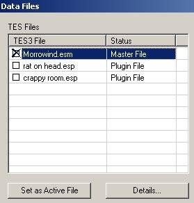
Поставьте крестик около Morrowind.esm чтобы загрузить мастер-файл.
Если вы создаете новый плагин, то просто нажмите Ok. Если вы переделываете уже существующий плагин, вам надо сделать его активным файлом (active file), чтобы конструктор знал, куда вставлять сделанные вами изменения.
Например, если бы я хотел слегка отредактировать файл rat on head.esp, мне надо было бы кликнуть на нем (чтобы он был выделен), а затем кликнуть Set as Active File перед нажатием на Ok. Таким образом, любые сделанные мной изменения пойдут в этот плагин, а не в новый.
Придется немного подождать. Можете наблюдать за процессом загрузки информации внизу экрана.
Начало всех начал
Сначала значение половины иконок на рабочей панели конструктора мне было непонятно, кроме того, некорректные настройки также добавили мне проблем. Поскольку интерфейс конструктора немного... хмм... странный (его окошки, например, не входят в главное окно... их вообще можно вытащить за пределы конструктора!), то я решил дать немного информации о рабочей панели.
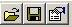
Эти кнопки (слева направо) открывают файлы, сохраняют файлы и устанавливают настройки программы. Правильно задать настройки - очень важно (можете пропустить эту часть, если на вашем столе стоит суперкомпьютер).
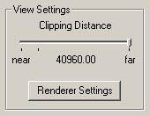
Нажмите иконку настроек и передвиньте ползунок Clipping Distance назад, к части near, куда-нибудь к черточке справа от самого слова near.
Зачем это нужно? Передвиньте ползунок в крайнее правое положение (far) и откройте ячейку с тоннами "начинки" (например, Балмору) и вы скоро поймете зачем... Если вам нравится ждать несколько минут, пока это все перерисовывается, что ж, ставьте на far...
Остальные настройки сделаны вполне разумно, поэтому я нажимаю Ok.
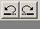
Это всем давно знакомые и горячо любимые кнопки Отмена (undo) и Повтор (redo), которые также доступны из меню Edit или клавиатурными сочетаниями CTRL+Z и CTRL+Y.
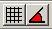
Эти две кнопки используются для включения и выключения фиксации/привязки (snapping). Левая кнопка привязывает к сетке, когда вы перемещаете предметы, а правая - привязывает к углу, когда вы эти предметы вращаете. Дистанция или угол привязки изменяется в настройках.
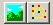
Левая кнопка включает и выключает редактирование ландшафта (вместо режима передвижения объектов), а правая позволяет редактировать сетку линий движения (paths).
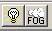
Очень рекомендую включить (то есть - нажать) эту кнопку с лампочкой, потому что при создании чего-то нового с отключенным светом трудно понять, что к чему. Включение/выключение тумана иногда также может оказаться полезным.
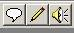
Последние 3 кнопки используются для редактирования диалогов, скриптов и привязанных к тому или иному объекту/событию звуков.
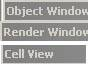
Окна конструктора: Object Window, Render Window и Cell View. Эти окна включаются/выключаются из меню View.
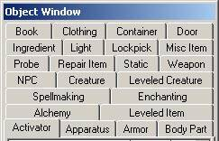
В окне Object Window перечислены все доступные в игре объекты, разбитые на категории.
Смысл большинства категорий понятен и так, однако на некоторых мы остановимся подробнее:
Static это группа объектов, большинство из которых не двигается и не меняется. Если вы посмотрите в этой категории, вы увидите очень много объектов, начинающихся с in (для внутренних ячеек - interior), ex (для внешних - exterior) и flora (для растений).
NPC это сокращение от non-player character (то есть остальные люди в игровом мире, не игрок).
Leveled Creatures - уровневые монстры - появляются в зависимости от уровня, достигнутого игроком, чтобы играть было не слишком легко.
Leveled Items - уровневые предметы - по принципу уровневых монстров, то есть предметы, появляющиеся в зависимости от уровня игрока - чтобы играть не стало скучно.
Activators начинают различные действия. Например, постели, на которых может спать игрок, находятся в этой категории.
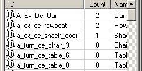
Рисунок иллюстрирует категорию Static. Как мы видим, это самый обычный виндоус-подобный список. Естественно, можно отсортировать список, кликнув по столбцу, а также передвинуть границы, потянув за них.
Нажатие правой кнопки мыши на объекте выдаст список действий, однократное левое нажатие позволит изменить имя объекта, двойное левое вызовет окошко редактирования объекта.
ВНИМАНИЕ: изменение свойств объекта изменит ВСЕ подобные объекты в игре. Например, если я изменю объект Rat, чтобы крысы стали более сильными и злыми, то ВСЕ крысы в игре станут сильными и злыми. Если вы хотите сделать крысу с чудовищными характеристиками для одного помещения, вам следует создать новое существо и назвать его, скажем, rat_vicious и затем использовать этот новый объект в вашем помещении, иначе, как уже было сказано, вы измените всех крыс Морровинда. Вы можете выбрать сохранение объекта с новым именем (создание нового объекта) при изменении уже существующего. Вы увидите диалог с предложением создать новый объект если вы изменили ID объекта.
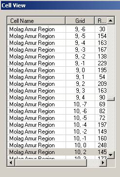
Окно Cell View разделено на две части. Левая часть показана на рисунке.
Левая часть окна показывает ячейки, существующие в игре. Ячейка это часть игры, которая подгружается как одно целое. Замечали паузу при переходе из одной ячейки в другую? В это время компьютер подгружает другую ячейку. Компьютер также подгружает ячейки при входе/выходе из помещений.
Существует два типа ячеек: наружные и внутренние.
Наружные ячейки установлены в сетке, покрывающей землю и море, причем координаты 0,0 примерно соответствуют центру карты. Отрицательные значения первой координаты (x) располагаются к западу от центра, положительные - к востоку. Подобным же образом, отрицательные значения второй координаты (y) располагаются к югу, а положительные - к северу от центра.
Внутренние ячейки не имеют координат. Во внутренние ячейки можно попасть, установив функции телепорта на дверь, так, чтобы игрок, при активации двери, попадал в ячейку. Маркеры двери должны быть также настроены соответствующим образом. Но об этом позже...
При двойном нажатии левой кнопкой мыши на названии ячейки в левой части окна, в правой появляется список ВСЕГО (и всех), что содержится в этой ячейке.
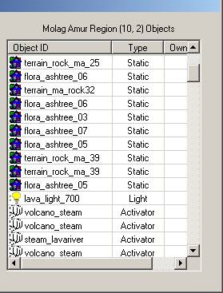
Итак, выбрав ячейку в левой части, в правой мы видим список всех объектов этой ячейки.
Этот список также можно изменять, кликнув по названиям столбцов вверху.
При двойном нажатии на объект в правой части окна, этот объект открывается в новом окне - Render Window.
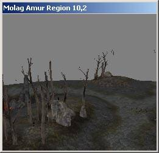
Render Window это ваше рабочее место, где вы проведете много времени, создавая плагины для Морровинда.
Здесь вы размещаете объекты, двигаете их, меняете угол и точку просмотра вашеих трудов, здесь вы совмещаете предметы.
Примечание: если у вас трудности с отображением предметов в Render Window, выставьте настройки монитора на 32-битный цвет.
Первые шаги
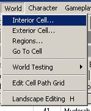
Посмотрим, как работает Render window. Кликните World | Interior Cell.
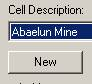
В появившемся окне нажмите New.
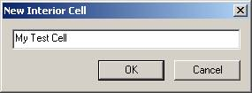
Назовите свою ячейку так, как показано слева. Нажмите Ok и затем снова Ok.
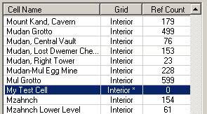
Перейдите в окно Cell View и найдите в списке вашу новую ячейку. Список должен быть в алфавитном порядке, если нет, то отсортируйте его, кликнув на название столбца. Также вы можете начать набирать название на клавиатуре и вы переместитесь в ту часть списка, названия ячеек которой начинаются с этих букв.
Обратите внимание на звездочку (*) рядом со словом interior. Она указывает на то, что эта ячейка была добавлена игроком и является модификацией от мастер-файла.
Дважды нажмите на название ячейки чтобы увидеть список объектов (который пока пуст) в правой половине окна, ячейка также будет отображена в Render window (тоже пока пустая).
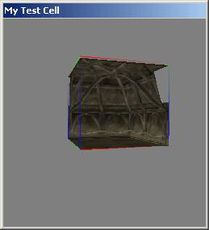
Перетащите кусок интерьера комнаты в render window из object window. Кусок, перенесенный мной, называется in_hlaalu_roomt_corner_01.
Если перенесенный вами кусок выглядит немного иначе - ничего страшного, позднее я научу вас менять вид.
Обратите внимание на линии, окружающие объект - они показывают, что этот объект сейчас выделен. Если нажать кнопку Delete (когда объект выделен), он будет удален из ячейки.
Объект можно выделить просто кликнув по нему. Несколько объектов можно выделить, зажав Ctrl и кликая на объекты, либо выделить их рамочкой (зажать левую кнопку и двигать мышь в нужном направлении).
Чтобы снять выделение, кликните на пустом место или нажмите d.
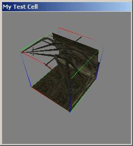
Вращение
Попробуем изменить вид на объект. Зажмите Shift и медленно двигайте мышь. Камера вращается вокруг объекта.
Камера будет вращаться вокруг любого выделенного объекта.
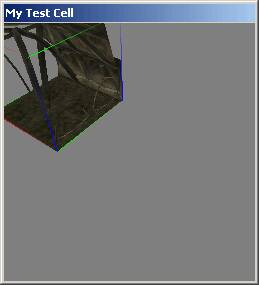
Панорамирование
Для панорамирования (передвижения камеры из стороны в сторону или вверх-вниз) зажмите пробел и двигайте мышь. Другой способ - зажмите среднюю кнопку (колесико) мыши и двигайте ее.
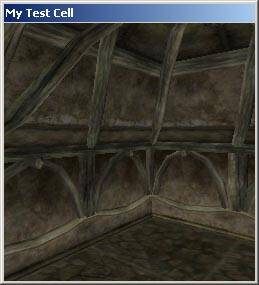
Зум
Зум осуществляется вращением колесика мыши или зажатием кнопки v и перемещением мыши в нужном направлении.
Вам может понадобиться использование всех трех методов (вращение, панорамирование и зум) для установки камеры в позицию, показанную на моей картинке.
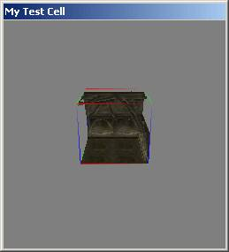
Центрирование вида
Для установки камеры в центральное положение с видом на выделенный объект, нажмите c (показано здесь). Для центрирования вида верх-низ нажмите t.
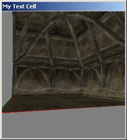
Копипейст (ака копировать-вставить)
Когда объект выделен, вы можете скопировать, а затем вставить его. Эта операция осуществляется из меню Еdit или с помощью клавиатурных сочетаний CTRL+C и CTRL+V.
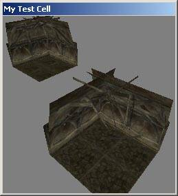
Настройте лучший вид
Используйте все методы, которые вы здесь изучили, для настройки вида обоих кусков (вращение, панорамирование и зум).
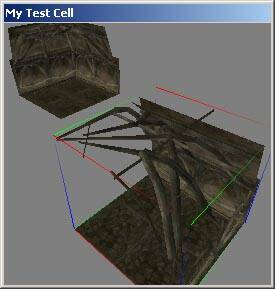
Вращение второго куска
Нажмите на рабочей панели кнопки snap to grid (привязка к сетке) и snap to angle (привязка к углу) перед вращением. Затем начинайте вращать кусок с помощью правой кнопки мыши так, чтобы он соединился с первым куском. Если кусок отказывается вращаться, убедитесь, что он выделен.
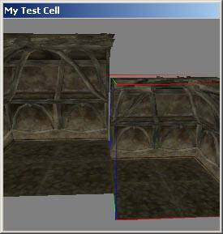
Передвижение второго куска
Двигайте второй кусок к краю первого (зажав левую кнопку мыши) до тех пор, пока они не состыкуются. Вам, скорее всего, придется несколько раз менять вид для того, чтобы достичь этой цели - используйте вращение, панорамирование и зум.
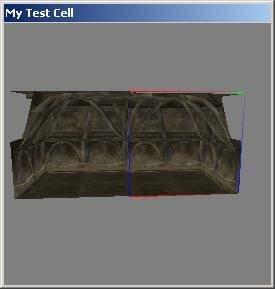
Вертикальное выравнивание
Отключите функции привязки на рабочей панели. Нажмите кнопку z и двигайте кусок. Вы должны передвинуть его таким образом, чтобы он оказался на одном уровне с соседним. Возможно, вам также понадобится немного сдвинуть его вперед или назад. Кнопка z позволяет двигать его вверх и вниз.
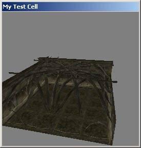
Более простой способ
Более простой способ выровнять все куски - включите обе функции привязки и используйте функцию дублирования (Edit | Duplicate или CTRL+D). Когда вы дублируете кусок, он выравнен точно так же, как и оригинальный кусок, и затем вы можете двигать и вращать его (не забыли включить функции привязки?) так, чтобы он точно совпал с предыдущими кусками. Этот способ гораздо экономнее.
Попробуйте сделать маленькую комнату (такую, как показано).
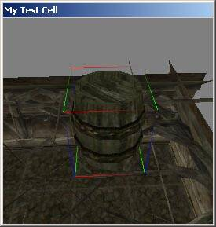
Добавим бочку над комнатой
Перетащите бочку из object window, категория Сontainers. Показанная на картинке называется barrel_01_drinks. Поставьте ее над созданной вами комнатой (так, чтобы бочка висела в воздухе).
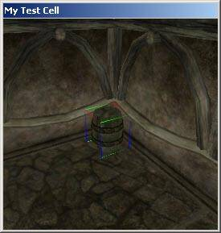
Опустим бочку и найдем для нее подходящее место
Чтобы опустить бочку нажмите кнопку f - она упадет на ближайшую поверхность. Возможно, придется нажать f несколько раз, чтобы она упала наконец на нужный уровень.
После того, как она упала на нужный уровень, вы можете передвигать ее мышью по плоскости пола.
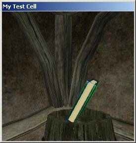
Странные углы
Добавьте еще один объект и попробуйте повращать его по одной или по двум осям. Не нажимайте ничего - и повращайте. А теперь нажмите z или x и перемещайте с зажатой правой кнопкой мыши.
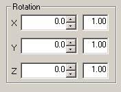
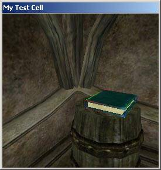
Исправление странных углов
Иногда после установки объектов под странными углами единственным способом изменить угол кажется ручной ввод значений.
Нажмите два раза на объекте, который стоит под необычным углом - появится окно его свойств.
Измените значения (X, Y, Z) на ноль и объект встанет так, как было запланировано дизайнерами (ляжет). Теперь вы можете поместить его на бочку, нажав f.
Если вы хотите изменить угол наклона во всем помещении, предлагаю сделать так - выстроить помещение и все объекты на одном уровне, затем выделить все объекты (рамкой или CTRL+A), и задать угол после того, как все выстроено.
Copyright 2002 by Scott Fisher Translated on December 1, 2003, by Winddancer